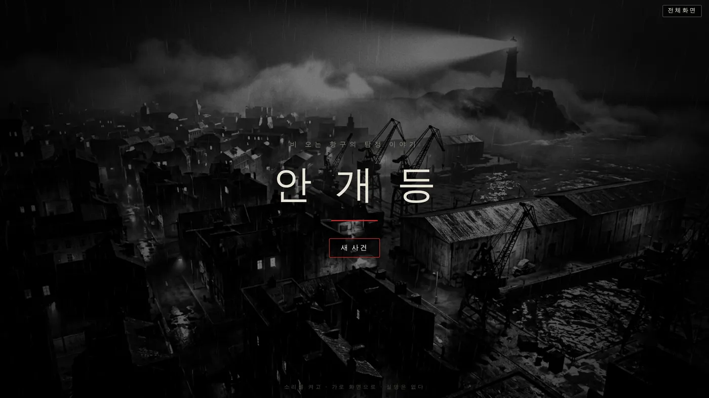
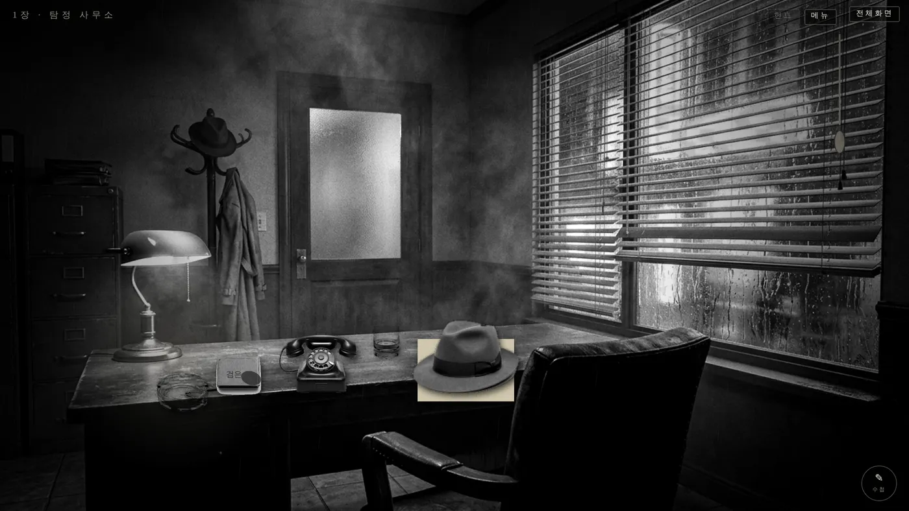

어떤 게임인가요?
해무(海霧). 비가 그치지 않는 항구 도시. 주인공은 이 도시에서 잃어버린 것을 찾아 주는 탐정이에요.
그날 밤, 한 여인이 사무소 문을 두드려요. 사라진 남편을 찾아 달라며, 탁자 위에 성냥갑 하나를 남기고 가죠.
작은 성냥갑에서 시작된 실마리는 재즈 바와 오래된 호텔, 안개 낀 부두를 지나 바다 끝 등대까지 이어져요. 결말은 두 갈래. 그곳에서 무엇을 보게 될지는 직접 확인해 보세요.
이렇게 해요
- STEP 1
빛을 비추고
라이터와 램프로 어둠 속을 비춰요. 물건은 끌어서 움직일 수 있어요.
- STEP 2
뒤집고, 닦고, 문지르고
두드리면 뒤집히거나 열려요. 붉은 고리를 끌면 물건이 돌아가요.
- STEP 3
겹쳐서 읽어요
찾아낸 것은 수첩에 저절로 적혀요. 답을 적으면 다음 방으로 가요.

🎷 분위기가 절반이에요
- 흑백 화면에 딱 하나, 붉은색만 남겼어요.
- 방마다 다른 느와르 재즈가 흐르고, 대사가 나올 때는 진짜 옛날 타자기 소리가 타닥타닥 들려요.
- 장이 끝날 때마다 빈칸을 채워 추리 문장을 완성해요.
- 마지막에는 흩어져 있던 단서들이 시간 순서대로 이어지는 「사건의 전말」이 펼쳐져요.
이런 분께 추천해요
- 쉬운 퍼즐로는 성에 안 차는 분
- 방탈출이나 암호 풀기를 좋아하는 분
- 느와르 영화, 탐정 소설을 좋아하는 분
게임 안에는 설명이 거의 없어요. 보는 사람만 보이게 만들었거든요. 보이는 글씨가 곧 답은 아니에요. 막히면 오른쪽 위 「힌트」를 눌러 보세요. 시간이 지나면 한 단계씩 열려서, 어디를 봐야 하는지 살짝 귀띔해 줘요.
📱 어떤 기기에서 하면 좋을까요?
- 가장 좋아요컴퓨터·노트북 크롬·엣지·웨일
화면이 크고 마우스로 물건을 섬세하게 움직일 수 있어요. 오른쪽 위 「전체화면」을 누르면 영화관처럼 꽉 차요.
- 좋아요태블릿 가로로
손가락으로 물건을 끌고 겹치는 재미가 있어요. 꼭 가로로 눕혀 주세요.
- 괜찮아요휴대폰 가로로 돌려서
가로로 돌리면 할 수 있지만, 작은 흔적을 찾아야 해서 화면이 작으면 조금 힘들 수 있어요.
오른쪽 위 메뉴(⋮ 또는 ···)에서 「다른 브라우저로 열기」를 눌러 크롬이나 사파리로 열어 주세요. 앱 안에서는 전체 화면이 안 되고 저장이 풀릴 수 있어요.
🍎 아이폰·아이패드에서는
- ① 사파리로 열고 가로로 돌리기
세로로 들면 「기기를 옆으로 돌려 주세요」 안내가 떠요. 화면이 안 돌아가면 제어 센터에서 화면 회전 잠금을 꺼 주세요.
- ② 화면을 넓게 쓰기
아이폰 사파리는 「전체화면」이 동작하지 않아요. 주소창 왼쪽의 가가(또는 aA) 버튼 → 「도구 막대 가리기」를 누르면 주소창이 사라져서 훨씬 넓게 볼 수 있어요.
- ③ 소리가 안 나요
무음 스위치가 켜져 있으면 음악과 타자기 소리가 나지 않아요. 이 게임은 소리가 정말 중요하니 꼭 무음을 풀어 주세요.
- ④ 이어서 하려면
진행은 그 기기에 저장되고, 첫 화면에 「이어서」가 생겨요. 아이폰 사파리는 오래 들어가지 않은 사이트의 기록을 지우기도 하니, 너무 오래 쉬지 말고 이어서 풀어 주세요.
🤖 갤럭시 등 안드로이드에서는
크롬이나 삼성 인터넷으로 열고 오른쪽 위 「전체화면」을 누르면 가로로 꽉 찬 화면이 돼요.
▶ 바로 해 보기
설치도, 회원가입도 필요 없어요.
안개등 시작하기game.edoori.co.kr/foglamp/